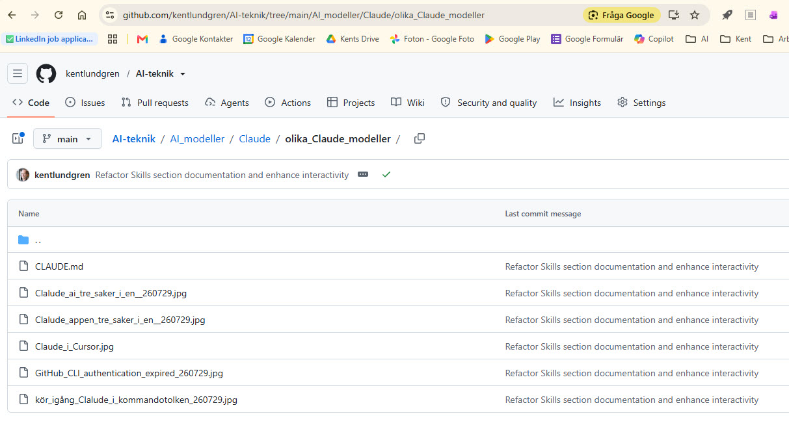

Det här började som en fråga jag ställde till Claude Code en eftermiddag: kunde vi planera en bloggtext, och en kodningsövning, om det jag kämpat med att förstå i Claudes ekosystem? Jag länkade till två tidigare inlägg — Tappade bort mig i Claudes ekosystem och Claude Cowork, Cursor och Claude Code — och bad Claude titta på tre skärmdumpar jag just tagit i den här mappen, utan att själv veta vad de skulle bli.
Det som följde var inte en enda instruktion som gav ett färdigt resultat, utan flera timmars fram och tillbaka. Vi planerade i omgångar innan något skrevs. Vi verifierade fakta mot primärkällor istället för att gissa — bland annat en motsägelse om huruvida Claude Code faktiskt läser AGENTS.md. Vi skrev en bloggtext och byggde den här sidan parallellt, testade lokalt i webbläsaren steg för steg, och jag rättade Claude flera gånger när något lät mer som en teknisk sanning än min egen upplevelse av att jobba med Cursor och Git. Sidan gick live via GitHub Pages, fick ett eget avsnitt om hur den blev till, och till och med en liten samling egna skills som styr hur Claude ska bygga vidare på den. Hela texten, med bilderna, finns på En bild av Claudes ekosystem.
Jag lägger ut det här inte som ett facit över Claudes ekosystem — jag tror inte man kan tala om en absolut sanning här — utan som en bild av hur det ser ut just nu, och ett konkret exempel på hur jag själv jobbar med generativ AI för att få fram både en färdig text och ett färdigt program på webben, med fler frågor, rättningar och omtag än man kanske väntar sig. Vill du se källorna bakom allt vi pratat om finns de samlade här:
Så är sidan uppbyggd, i tre faser: Fas 1 — filerna som redan styr samarbetet innan man ens börjar. Fas 2 — vilken yta man väljer att jobba i, med sina egna verktyg och modeller. Fas 3 — versionhantering i Cursor och Git (3a), och leverans till GitHub där filerna blir levande sidor vem som helst kan nå via en URL (3b). Längst ner: en sammanfattning av hur den här sidan själv blev till. Klicka på en ruta nedan.
Filerna som styr samarbetet — innan man börjar
Ytor (surfaces) — var man väljer att jobba
Cursor och Git (3a) → GitHub (3b)
Hur den här sidan blev till
Den här sidan är inte bara om att samarbeta med AI — den är själv byggd i ett sådant samarbete. Så här gick det till, 29 juli 2026:
- Fem skärmdumpar under en eftermiddag — Kent samlade dem i samma mapp, utan att först veta vad de skulle bli.
- Flera omgångar planering — innehållet formades i dialog innan något skrevs, inklusive research mot primärkällor (Claude Codes egen ordlista, agents.md) istället för att gissa på fakta.
- CLAUDE.md skapades som projektets minne — en fil den här mappen läser vid varje ny Claude Code-session.
- Bloggtexten och den här sidan skrevs och testades lokalt av Claude Code, i webbläsarförhandsvisning, innan något lämnade datorn.
- Kent granskade, committade och pushade själv — via Cursor, inte av Claude Code. Varje gång något går live är det hans beslut, inte ett automatiskt steg.
- README.md skrevs för att förklara projektet för nästa besökare — dig, just nu.
Claude Codes roll
Research, skrivande, kodning, lokal testning. Föreslår, bygger, verifierar — men rör aldrig git commit/push i det här projektet.
Kents roll
Riktning, redigering, och det sista beslutet: vad som faktiskt publiceras, och när. Commit och push sker alltid av honom själv, via Cursor.
Allt det här ligger öppet i ett riktigt GitHub-repo — inte bara beskrivet här, utan faktiskt granskningsbart.
